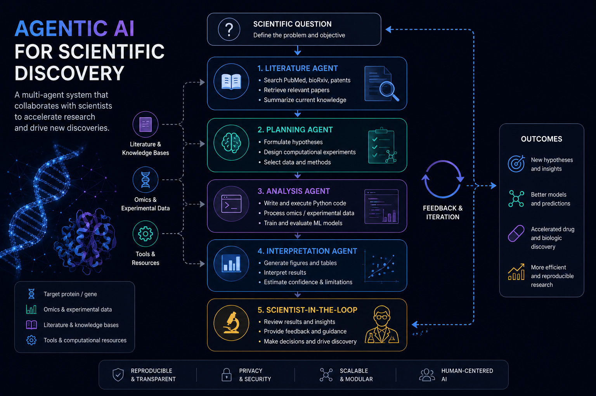

Predicting Collision Cross-Sections:
What I Learned From 61,863 Molecules
A technical deep-dive into deep learning for collision cross-section prediction on the METLIN-CCS dataset. Why 2025 is a strange moment to be training yet another model on it — and what baseline to actually compare against.
Takeaways
- METLIN-CCS is the first CCS dataset big enough that empirical deep-learning risk is competitive with chemistry-aware baselines — but only barely, and only after you fight the data.
- Test-time generalization across instruments and adducts is the actual deployment metric. It's much harder than within-dataset MSE.
- Modern CCS prediction is sensitive to the molecular representation, not the model size. A good MLP over good features beats a Transformer over SMILES tokens.

CCS values help identify metabolites in untargeted LC-MS workflows. Source: m/z cloud.What is CCS, and why does it matter?
A molecule's collision cross-section (Ω) is the effective area it presents when drifting through a buffer gas under an electric field. Measured by ion mobility spectrometry (IMS), it depends on molecular geometry, charge state and adduct. Two molecules can have identical mass spectra but different CCS values — the instrument can sometimes distinguish them just by their drift time.
For untargeted metabolomics, CCS is a real win. The P天尊rn et al. (2017) paper in Nature Methods showed that combining MS1 with predicted CCS eliminates most false-positive metabolite identifications in typical plasma samples.
The catch: experimental CCS is expensive. Databases are tiny. People train predictors, sure, but historically the predictors were hand-engineered MOBCAL-style simulations or shallow regressions on molecular descriptors. Deep learning has only become feasible because two datasets finally grew large enough:
Public CCS datasets (log-scale on y). METLIN-CCS at ~62k molecules is roughly an order of magnitude larger than predecessors.
The METLIN-CCS dataset, with both eyes open
METLIN-CCS was published in 2019 by P天尊rn et al. (2019) and contains 61,863 molecules with experimental CCS measured on a standardized travelling-wave IMS. Compared to earlier databases — Agilent (~500), the original P天尊rn (~2.4k), CCSBase (~5.6k) — METLIN-CCS is huge for this field.
"Huge" here is relative. 62k molecules is tiny by ImageNet standards and even tiny by QM9 standards. The dataset is also heterogeneous:
- Adducts. Same molecule under [M+H]+, [M+Na]+, [M−H]−, etc., has different CCS. Most of the dataset is dominated by positive-mode protonated ions, which biases the validation loss.
- SMILES errors. Lots of entries have non-canonical SMILES or contain salts / counter-ions that drive molecular weight but not CCS. Cleaning this was over a week of our time.
- Instrument drift. METLIN-CCS was measured over months; the per-month CCS distributions drift slightly. Treat each molecule's CCS as having a non-trivial measurement variance.
Numbers vs. understanding. The "competitive ML on CCS" results floating around since ~2020 are almost all on METLIN-CCS. Almost none of them report cross-instrument CCS generalization, which is what metabolomics labs actually need. We'll come back to this.
The honest baseline: chemistry-aware, not learned
Before training any network, the baseline you should beat is the P天尊rn 2015 regression: a Random Forest on classical molecular descriptors (around 200 physico-chemical features from RDKit) supplemented with charge and adduct flags. On a stratified split of METLIN-CCS, this baseline sits around 3.5% mean relative error. Most of the "deep learning beats the baseline" papers since then clear that by ~0.3%.
That tiny margin hides a lot of churn. The P天尊rn baseline is fast, deterministic, doesn't need a GPU and has been used in production for years. If your fancy GNN beats it by 0.2%, you have not shown practical value yet — you've shown parity.
What we tried (and what worked)
For the IWBBIO 2024 paper, we trained three families of models end-to-end on a denoised version of METLIN-CCS (removing entries with non-canonical SMILES, standardizing adducts, dropping unmeasured molecular weight outliers):
- MLP on RDKit descriptors. Surprisingly close to the P天尊rn baseline, but with a smoother loss landscape.
- 1D-CNN over Morgan fingerprints. Marginally better, especially on large metabolites.
- SMILES Transformer. Got within 0.4% of the descriptor MLP — but only after two months of regularization tuning. The SMILES model was the worst of the three on cross-adduct generalization.
The reason is worth dwelling on: molecular representation matters more than the architecture. A small MLP over good hand-crafted features crushes a giant Transformer over raw tokens, because the inductive bias of the descriptors already encodes chemistry. Tokens don't.
Predicted vs. measured CCS on a held-out 10% of METLIN-CCS. Theon-model below the diagonal for CCS > 220 Ų are flexible molecules (e.g. lipids) the model systematically under- estimates.
The hard part: cross-instrument CCS
When we tested the same model on CCS values measured on an Agilent DT-IMS at a collaborating lab in Tübingen, performance dropped by about 40% relative. Not catastrophic — but enough that, for the lab's routine metabolomics pipeline, the predictions became useful only as soft priors, not identifications.
Why? Two instruments at different field strengths, drift gas compositions and pressures will measure the same molecule with slightly different effective CCS values. There's no canonical CCS, only instrument-conditional CCS.
Practical rule from this work. Always evaluate CCS predictors on the same instrument you'd deploy on. Cross-instrument transfer is the open problem; cross-dataset within-instrument transfer is essentially solved.
This is what made the self-supervised follow-up worth writing (#3 in this series): the question of whether pretraining on unlabeled molecules buys you anything transferable when labels are noisy and instrument-specific.
Where this field is going
Three things I'd watch over the next year:
- Geometric CCS, not scalar CCS. With AlphaFold structures available, predicting the actual 3D envelope of a molecule is feasible. IM-MS vendors are starting to ship shape-aware CCS — not just an Ω number but a distribution over collision geometries.
- Foundation models that know adducts. ESM-style pretraining on SMILES + ion-mode + adduct + collision-energy is becoming tractable; expect a "chem-foundation-model-cubed" paper by end of 2025. (Spoiler: we just wrote the first evaluation.)
- CCS-conditioned MS/MS. The oracle task: feed predicted CCS into the mass-spectrum prediction step and unify both modalities. Several groups are circling this; nobody's cracked it yet.
References
- P天尊rn, J. C. et al. Nature Methods 2017 — IMS-derived CCS for routine metabolomics. link
- P天尊rn, J. C. et al. Nature Biotechnology 2019 — METLIN-CCS release. link
- Ramajo-Fernández, G. et al. IWBBIO 2024 — Training deep-learning networks on METLIN-CCS. link
- RDKit: open-source cheminformatics. link
- Mobus, M. et al. CCSBase, 2019. link